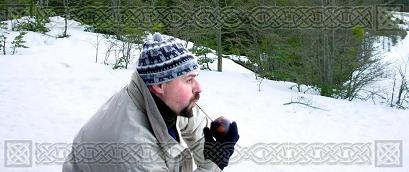
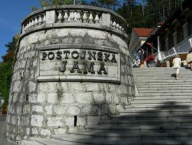
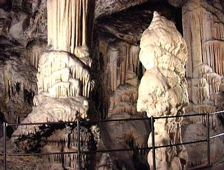
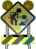

Cosas que me interesan
- Anecdotas de viaje

| Lagunita escondida | ||
Pisca, pisca
Muchas provincias de Italia buscan mantener contacto con aquellos italianos que desde principio y hasta mitad del siglo veinte emigraron principalmente a América. Por eso varias regiones tienen ofertas de estudio especiales para aquellos hijos y nietos de los emigrados, permitiéndoles así conocer mejor la historia y el paisaje de la tierra de sus ancestros. |
|||
|  | Así que alguien propuso tomarnos un tren a Postumia (Postojna), en lo que en ese entonces todavía era Yugoslavia (Ahora es Eslovenia). Si bien el viaje no era largo, significaba pasar por “la cortina de hierro” y entrar a un país “comunista” con toda la imaginería que eso implicaba. |
||
A mitad de camino el tren se detuvo, ya en Yugoslavia, en la estación de Sezana., donde el guarda nos pidió los pasaportes. |
|||
Una vez en la estación de Postumia tuvimos suerte de encontrar gente que hablaba italiano y nos indicó por dónde estaba “La Grotta”, ya que estaba muy señalizado. Nuestro destino nos sorprendió muy positivamente. Gran parte de la caverna se recorría con un trencito (aún hoy es así) que va pasando por las distintas “salas” o cuevas. Además de las estalactitas que “caen” del techo, impresionan las increíbles estalagmitas que “crecen” del suelo, todo producido gota a gota, siglo a siglo. La iluminación bien elegida se encarga de resaltar la belleza o la singularidad de cada formación natural. En alguna partes la piedra semeja un lienzo, tan delgado que la luz lo atraviesa desde atrás.. De vuelta a la estación sacamos el pasaje de vuelta a Trieste. El hombre de la ventanilla nos dio a entender, señalando el reloj, que nos apuráramos a tomar el tren que ya salía. Como había más de uno, consultamos a un guarda por el tren a Trieste.
|
 | ||
-- Pisca, Pisca – nos contestó mientras nos instaba a subir. A diferencia de los trenes que habíamos tomado en Italia, este viene lleno y tenemos que viajar parados. Se va haciendo de noche y nos surge la duda de si estamos en el tren correcto, porque no reconocemos nada del paisaje de ida. Le preguntamos a otro pasajero que nos dice, que va a “Moska” :¡Moscú!. Cuando ya nos estamos poniendo locos pasa el guarda que nos había hechos subir al tren. -- Trieste, Trieste – le indicamos con nuestros tickets en la mano. |
|||
-- ¡Argentini! – nos saludó alegre. Ahora estaba sorprendido de vernos de vuelta tan pronto. Hasta pareció estar triste porque ya nos íbamos de su país. En Trieste nos relajamos y nos preparamos para continuar con el curso a la mañana siguiente. Por un momento se nos había pasado por la cabeza todos los monstruos que Occidente imaginaba tras la cortina de Hierro. Lo cierto es que allí encontramos hermosos paisajes y gente macanuda, más allá del idioma, la geografía o la política. |
|||
Sergio Alberino |
|||
Lagunita escondida
En 1991, con un amigo con el habíamos hecho ya varios campamentos, decidimos “engancharnos” en una travesía “organizada” por unos chicos que querían ver de convertir en fuente de ingreso algo que les apasionaba. La propuesta era recorrer en 12 días la distancia que separa el lago Ñorquinco del lago Quillen en la provincia de Neuquen (un poco más “arriba” del volcán Lanín) , a pie y con mochila. La experiencia fue más que interesante y el grupo resultó bastante desparejo, pero con mucho espíritu. (de ese viaje aún conservo a varios amigos)
|
||
Sergio Alberino |
||
 |
En Construcción En breve se subirán contenidos |
|